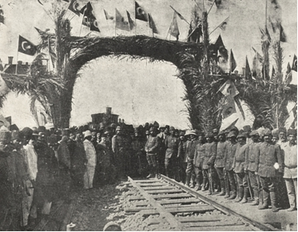
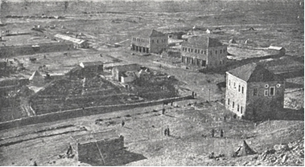
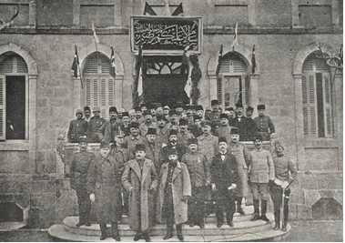

8 Ekim 1914 sabahı dar hatlı Hicaz demiryolunun treni beni ve beraberimdekileri –bir Arapça konuşan yaver, levazım Yüzbaşısı Sterke ve birkaç emir eri– dünyanın bütün büyük memleketlerinden gelmiş birçok hacıyla beraber güzel bir havada Ürdün sınırındaki yüksek plâtoda bulunan çirkin ve küçük bir yer olan Maan istasyonuna getirdi. Aynı gün öğleden sonra birkaç jandarma refakatinde Maan’dan yola çıkarak hayvanla Karande üzerinden ve Vâdi El-Akaba arasından Türk–Mısır sınırına ve bu sınırı takiben Hafire ve buradan önce Bîrüssebi ve sonra Hafirülavce üzerinden Akdeniz sahilinde bulunan Tellüre-fah’a ve sonra Gazze’ye gittik. On gün hayvan sırtında geçen bu keşif seyahati zahmet, meşakkat, mahrumiyet ve her çeşit maceralarla doludur. Bu seyahatte biz çölü, anlatılamayacak bütün güzellikleri, kendisine mahsus cazibeleri ve büyük ölçüde yapılacak askerî hareketlerde onun arz-edeceği büyük zorluklarıyla tanıdık ve öğrendik. Bu keşifte elde ettiğimiz birçok tecrübe ilerde bizim için fevkalâde kıymetli olacaktı. Artık bundan tasarladığımız harekât için yapılacak hazırlıklarda ayağımızın altında oldukça sağlam bir zemin bulunuyordu.
Hayatımda ilk defa deveye binmiştim. Atlarda olduğu gibi develer de muhtelif cins ve ırklara ayrılmaktadır. Bir safkan İngiliz atı ile Persheron[5] arasında nasıl bir fark varsa çöl Bedevîleri tarafından iyi terbiye edilmiş asil kanlı bir hecin de bir Anadolu yük devesinden o kadar farklıdır.
Maan’da bana tahsis olunan deve safkan değildi. Bundan başka altımdaki eyer de sakat olduğundan ilk 70 ilâ 80 kilometrelik gündüz yürüyüşleri benim için oldukça zahmetli olmuştu; fakat bindiğim hayvanı jandarmalardan birinin daha iyi devesiyle değiştirdiğim vakit epeyce rahat etmiştim.
Bu seyahatten sonra çölde çalıştığım zamanlar daha birçok deveye binmiş ve uzun seyahatler için onun hoş bir nakil vasıtası olarak kıymetini anlamıştım. Gerçekten de daha başka yürümesini seven birçok hayvandan istifade etmiştim ve bindiğim develerden en iyisi İngilizlerden ganimet olarak alınan bir Hint devesiydi ki, bu hayvan dikkat çekecek derecede yumuşak yürüyüşüyle kendini fark et-tirmişti.
Deveye yalnız yularla binilir. Boğazdan çıkarılan alışılmış seslerle o, yürütülür, durdurulur, çökertilir ve ayağa kaldırılır. Küçük bir değneği devenin boynunun yan tarafına hafifçe vurmakla o sağa ve sola döndürülür. Devenin adeta yürüyüşü pek açıktır. O, ekseriya süvari için rahat ve kendisi için zahmetli olmayan rahvan yürüyüşüyle gider ki, bu yürüyüşle saatte on kilometre yol alabilir. Onun süratli gidişinde üzerinde durmak güçtür. Bu yürüyüş çeşidi o kadar açıktır ki, beraber gidebilmek için at uzun dörtnal yapmaya mecburdur. Deve dörtnala kalkmasını sevmez; çünkü o, dörtnal yürüyüş için yaratılmamıştır.
Deveye binildiği zaman insanların kendilerini deniz tutmuş gibi mide bulantısı hissettiklerine hiç rastlamadım. Fakat deve ayağa kalkarken -binmek için deve çökertilir- binicilerin dengelerini kaybettiklerini veyahut gece yürüyüşleri esnasında devenin beşik gibi hareketiyle uyuklayarak düştüklerini gördüm.
Seyahat yürüyüşleri için deve rahattır; çünkü aynı zamanda süvarisinin eşyasını ve suyunu da taşıyabileceğinden atta olduğu gibi su bulunan yerlere bağlı kalmaz. Ancak deveye günlerce su vermeye lüzum olmadığına dair yürütülen iddia sadece bir efsaneden ibarettir; bununla beraber Bedevîlerde suların bulunduğu uzun mesafelerin geçilmesi için yetiştirilmiş develer vardır ve ilkbaharda çölde devenin gıdasını teşkil eden otlara su yürüdüğü zaman devenin su ihtiyacı atınkine nazaran önemli oranda azalır. Fakat devenin su içmediği ikinci günde genel olarak kuvvetten fazla düşer ve üçüncü, dördüncü susuz günlerde ise tamamen dermanı kesilir.
Çöl, biz Avrupalıların düşündüğünden tamamen başkadır. Birincisi, çeşitli çöl alanlarının karakter ve oluşumlarının birbirine olan farklılığı insanı şaşırtır. Bu farklılık, yerine göre kum, taş yahut yarım çöl denilen toprak çölünden ibarettir. Bütün çöllerde ortak olan şey su kıtlığı ve bununla paralel olarak da bitki yetişmemesi, yolların ve meskûn mahallerin bulunmamasıdır.
Hayvanla yaptığımız bu yolculuk esnasında ilk olarak taş çölünü gördük. Bunun için önce Ürdün yüksek plâtosunu geçtik. Yükseklikleri 1600 metreye kadar varan bu vahşi dağlık yerler kısmen yüksek dağlar karakterini taşımakta ve dik, tamamen çıplak yamaçlar, hemen hemen geçilmesi mümkün olmayan vadiler ve yarlardan oluşmaktaydı. Bu yüksek yayladan Ürdün (Şeria) vadisinin, ölü Lût Gölü’nün devamını oluşturarak Akabe Körfezi’ne kadar devam eden susuz çöküntüye Vâdi El-Akaba denilmektedir. Buraya iniş, yalnız birkaç dik ve kilometrelerce uzun, derin kesilmiş ve her iki tarafında çok dik duvarlar yükselen yarlar arasından mümkün olmakta ve bunlar da kısmen o kadar dardır ki, hiçbir şekilde, herhangi bir askerî nakil vasıtasından istifadeye imkân bırakmamaktadır.
Çıplak kayaların bulunduğu yerlerde, taş çölü yüzeyinde çakıl ve çakmak taşından oluşan bir tabaka bulunmakta olup bunun üzerinden askerî nakil vasıtaları fazla zorluklarla karşılaşmaksızın hareket edebilir.
Vâdi El-Akaba’nın batısında taş çölü, daha yumuşak bir karakter ve sakin bir şekil alarak Hafir civarına gelir ve buradan da Akdeniz sahillerine kadar kum çölüne dönüşür. Taneli ve derinliğine devam eden kum, burada zeminin üst yüzeyini oluşturur ve bunun üzerinde yürürken insan ve hayvanlar topuk kemiklerine kadar kuma gömülür ve yürüyüş son derece zahmetli, yorucu ve vakit kaybettirici olur. Arabalar çölde ancak alışılmışın aksine kuvvetli hayvanlar koşularak çok yavaş ilerleyebilirler. Kumluk arazi de; uzun, düz yahut dalgalı kum ovaları şeklinde değişmektedir. Tamamen düzensiz şekiller gösteren kumluk arazide tepelerin yükseklikleri yüz metreye kadar çıkmaktadır. Deniz tarafından gelen rüzgârlar bu tepeleri sürekli hareket halinde bulundurduklarından bunlar yer ve şekillerini devamlı değiştirirler. Uçaktan bakıldığı vakit bu kumluklar, bir fırtınadan kamçılanarak birdenbire taş haline gelmiş bir deniz gibi görünürler.
Bîrüssebi ve Gazze civarında geçtiğimiz çöl mıntıkaları ziraata uygun olduğundan bunlara toprak yahut yarım çöl derler. İlk mevsim yağmurlarından sonra Bedevî, atalarının kullandıklarından hemen hiçbir farkı olmayan sabanla toprağı sürer; arpa, darı ve biraz da buğday eker. Birkaç hafta sonra hasat zamanı gelir ve daha mayıs ayının ortasında güneşin merhametsiz ışıkları her şeyi yakar ve kavurur. Gözün erişebildiği her yer, tekdüze, acınaklı bir bozkır manzarası gösterir.
Filistin ile Mısır arasındaki Tih Çölü’nün iç kısmı düz bir taş çölünden ibarettir. Buralarda birkaç tane büyük, binlerce senedenberi güneş, hava ve rüzgârların tesiriyle derin yarıklar oluşmuş, tamamen çıplak ve geçilmesi mümkün olmayan birkaç yüz metre yükseklikte dağ yığınları yükselmektedir. Bunlardan en meşhurları Hilâl ve Mağara dağlarıdır. Akdeniz kıyılarına ve Süveyş Kanalı’na doğru yaklaşınca çölün iç kısmı bir kum kuşağı ile çevrelenmiş olup bunun da genişliği 20–60 km. arasında değişmektedir. Az veya daha çok büyüklükte, uçan kumlardan oluşan adalar da yine bu kısmın içerisindedir.
Kum çölünde nisbeten çok yerlerde 1–3 metre derinliklerde suya rastlanmakta ise de bu su genellikle tuzlu, acı ve içmek istenmeyecek bir lezzettedir ki, bizim memlekette hiçbir hayvan bunu içmez. Su bulunan yerler hurma ağaçlarıyla kendilerini belli etmektedir.
Taş çölünde su, tabiatın meydana getirdiği tek tük sarnıçlarda ve sayısı çok az olan Bedevî kuyularında bulunmaktadır. Bu kuyular genellikle kurumuş nehir yataklarının tabanlarındadır. Bunlar birkaç metre derinliğinde dar ve bazen içi hurma dallarıyla kaplanmış küçük kuyular olup bunlardan su, ya kova kova alınır veyahut daldırılarak çekilir. Keşif seyahatimiz sırasında nisbeten az olan su ihtiyacımızın sağlanması daima saatlerce sürmekte ve bundan sonra da kuyular tamamen boşalmış bir hâle gelmekte ve ertesi sabaha kadar da çok az miktarda su biriktirmekteydi. Küçük bir Bedevî kabilesi veyahut da bir kervan böyle bir kuyudan su ihtiyacını karşılayabilirse de askerî maksatlar için bunlar tamamen yetersiz sayılır.
Bedevîler bu gibi su mahallerini yabancılara hiç söylemezler yahut çok para karşılığında gösterirler. Tih Çölü’nde yalnız tek bir kaynak vardır ki, bu da Kuseyme civarındadır. Musa Peygamber’in, susuzluktan ölüm derecesine gelen Yahudilere buradaki kayadan su çıkardığı rivayet edilmektedir.
Pek nadiren boşanan sağanaklardan, nehir yataklarında suların yerin altına geçemediği tek tük yerlerde yahut kumluk mahallerde bir müddet için küçük veya büyük su birikintileri bulunmaktadır ki, bunlardan alınan su insanlar ve hayvanlar için çok kıymetlidir.
Harekâttan önce yedi sene müddetle çölde yağmur yağmadığı halde 1914–1915 kışında diğer senelere oranla bol yağmur yağmış bulunuyor ve Bedevîler bu hâli Türkler tarafından yapılacak harekât için hayırlı bir olay olarak görüyorlardı. Gerçekten de bu kış yağmurlar yağmasaydı bizim için harekâta katılan birlikleri çölün ortasından Kanal’a sevketmek hemen hemen imkânsız olurdu.
Çölde ve yarım çölde şose yahut yollar bulunmaz. Orada dere tepe düz gidilir. Genellikle izler -hatta büyük kervanlarınki bile- bir iki saat sonra kaybolur. Vadi denilen derin ve geniş oyulmuş nehir yatakları harekâta engel oluşturur.
Çöldeki akarsular kesik kesiktir. Nadir olduğu oranda çok şiddetli sağanak tarzındaki fırtına yağmurları, esasen kuru olan nehir yataklarından birdenbire gök gürlemesine benzeyen bir gürültü ile ve önüne gelen her şeyi koparıp sürükleyen bir kuvvetle büyük bir su kütlesi halinde boşanır. Şiddetle yağan bu yağmurlar, verimli olmayan ve güneşin hararetinden yanıp kavrulmuş, bir taş gibi sert bir hâle gelmiş olan zeminin içerisine işleyemez; bunun için bu sular, dereler ve çaylarda toplanarak müthiş süratle vadilere boşanırlar. Binlerce seneden beri bu sular zemini, daha fazla oymuş, taş ve çakılları sürükleyip getirmiştir. Sular, o kadar çabuk ve ansızın gelir ve o nisbette çabucak da kaybolur ve çoğunlukla birkaç saat içinde çekildiğinden insan ayağını ıslatmadan nehrin yatağından geçip gidebilir. Araplar bu birdenbire boşanan ve bir müddet sonra kaybolan akıntıya “sel” derler. Vadilerde konaklayan kervanların bu gibi anî sellerden zaman zaman kendilerini kurtarmaları çok defa mümkün olamamıştır. Milâttan önce 325’te Büyük İskender, Belücistan çöllerinde birdenbire boşanan bir sel neticesinde ağırlıklarının bir kısmını kaybetmişti.
Bu vadiler genellikle derin ve yan duvarları dik olduğundan buralardan inip çıkmak –özellikle arabalar için– büyük zorluklar göstermektedir. Nehir yataklarının içinde genellikle suların sürükleyip set haline getirdiği çakıltaşları harekât için can sıkıcı ve vakit kaybettirici engeller oluşturur.
Su olmamasından dolayı çöldeki hayvan çeşiti çok azdır. Arasıra narin bir karacaya yahut zayıf bir tavşana rastlanır. En çok görülen hayvan her çeşitten kertenkeledir. Bazen küçük yılanlarla, akrep ve çıyanlara da rastlanır. Fareler de çölde çoktur. Kuyruk sallayan cinsten bir çift kuş yahut bir keklik nadiren görünür. Çölün kenarında ve meskûn yerlerin yakınlarında çakallarla akbabalar çok fazladır. Bu çirkin ve obur hayvanların, bize sıhhiye polisi olarak çok mükemmel hizmetler vermiş olmalarına mükâfat olarak, öldürülmeleri yasaklanmıştı. Her ölen hayvan, akbabalar tarafından çok kısa bir zamanda yalnız kemikleri kalıncaya kadar tamamen silinip süpürülür. Bir deve kazara düşecek olursa çoğunlukla nârin olan kemiklerinden birisi kırılır. Böyle bir hayvanın öldürülmesini İslam dini yasakladığından düşen devenin semeri alınır ve önüne bir yığın ot konur ve hayvan kendi talihine terk edilir. Bu hayvan açlık ve susuzluktan ölünceye kadar genellikle çok vakit geçer. Böyle can çekişen hayvanın etrafında akbabaların üşüşüp onun ölümünü beklemesi çok korkunç bir manzara oluşturur. Yolu her gün böyle can çekişen bir hayvanın önünden geçen bir Almanın bu acıklı manzaraya tahammül edemeyerek onun ıstıraplarına bir an önce son vermek kastıyla ona bir kurşun sıkması, Müslümanlar arasında heyecan uyandırmış ve şiddetli şikâyetlere sebep olmuştu.
Aynı dinî hükümler bulaşıcı hastalıklarla mücadeleyi de son derece güçleştiriyordu. Talim veya yürüyüşler sırasında, mola verildiğinde, her zaman göze çarpan manzara şu idi: Erler, ceket ve –eğer varsa– gömleklerini çıkararak özenle bitlerini ayıklıyorlardı. Fakat yakalanan bitler öldürülmeyerek ve dikkatle iki parmak arasında tutularak yere bırakılırdı. Bu bitler, tabiî sonradan oralarda oturacak insanlara tekrar geçebilirlerdi.
Sina Çölü’nde meskûn olan Bedevîlerin sayısı yirmi ilâ otuz bin kadardır. Bunlar genellikle birçok küçük kabilelere ayrılmışlardır. Umumiyetle çok fakirdirler. Erkekleri arasında güzel, keskin çizgili yüzleri, küçük el ve ayakları ve harikulâde dişleri ile iyi etki bırakanlar vardır. Kadınlar ise, daha genç yaşlarında kavrulmuş harap olmuşlardır. Bedevîlerin hâl ve tavırları, oldukça kibar ve efendicedir. Kendi zihniyetlerine göre, bu Bedevîler, istisnasız mal edinme düşkünü, dilencilerden ibaretti. Ben, hiçbir Bedevînin dinin emrettiği ibadetleri yaptığını görmedim. Zaten bunlar arasında hiçbir hoca da yoktur. Çöldeki hayatım uzadıkça birçoklarını tanıdığım Bedevîlerden yalnız bir tanesi Mısır’da uzun müddet süren bir hapis cezası esnasında okuma-yazma öğrenmişti.
Bedevîlerin kültür durumlarının aşağılığını kadınlara verdikleri mevki göstermektedir. Bu arada, yalnız Sina Çölü’nde tanımış olduğum Bedevîlerden bahsettiğimi özellikle belirtmek isterim.
Kadın, alınıp satılan bir metadır. Bir binek devesi veyahut yetişmiş bir hurma ağacı karşılığında baba, genç ve bâkir kızını verir. Dul kalmış veyahut kocasından ayrılmış bir kadın ise, bir yük devesi karşılığında elde edilebilir. Daha on üç, on dört yaşlarında iken genç kızlar evlenirler. En güç işleri kadınlar görmeye mecburdur. Erkekler hayvanla ava, çapulculuğa ve harbe giderler yahut keyif yaparlar ve kahve pişirirler. Otomobilimizde meydana gelen bir bozukluğu düzeltmek üzere bir Bedevî çadırının yakınında durduğumuz sırada bütün kadınlar, çocuklar ve köpekler merakla arabanın etrafına toplanmışlar ve rahatları kaçırılmış bir kaz sürüsü gibi haykırmaya başlamışlardı. Orada, bulunan ihtiyar Bedevî şeyhi taş, tükürük atarak sükûneti boş yere sağlamaya çalışıyordu. Bütün bu kadınlarla nasıl başa çıktığını bir tercümanla kendisine sorduğum vakit, gülerek bana elindeki kalın sopayı gösterdi ve bunun işe yaramadığı zamanlarda çadırını su mahallinden yarım saat uzağa kurduğunu ve o vakit hepsinin yumuşadığını söylemişti. Güvenlik meselesinden dolayı bedevî hiçbir zaman çadırını su mahallinin yanında kurmaz. Büyük toprak testilerle, başlarının üzerinde kuyulardan çadırlara su taşımak kadınların vazifeleri arasındadır. Bu iş, derin kum çöllerinde çok çetin ve yorucudur.
İngilizler Sina Çölü’ndeki Bedevî şeyhlerine küçük küçük emekli maaşları vermek usulünü uyguluyorlardı. Bu şekilde şeyhler maaşlarını almak için ara sıra hükümet dairelerinde görünmeye mecbur oluyorlar ve emeklilik paralarının bir müddet kesilmesi serkeş şeyhleri yola getirmek için en tesirli bir yöntem oluyordu. Görünüşe göre İngilizler Bedevîlere kötü muamele ediyorlardı. Çölü imar ederek büyük müttefiklerini –Süveyş Kanalı ile Mısır’ın önünde bulunan çöl sahalarına İngilizler “büyük müttefik” adını vermişlerdi– ellerinden kaçırmakta İngilizlerin hiçbir menfaati yoktur. Bu şartlar altında İngilizlerden biraz daha fazla emekli maaşı vererek Bedevîleri kendi taraflarına çekmek Türkler için güç bir iş değildi. Tih Çölü’ne hâkim olduğumuz müddetçe Bedevîler genel olarak bize sadakat göstermişlerdir. Şunu da övgü olarak belirtmek gerekir ki, Türkiye’nin savaşa girmesinden önce İngilizlerin, Alman subaylarının ve Doktor Prüfer’in başını getirmek için vaat ettikleri kısmen çok yüksek para ödülünü kazanmaya hiçbir Bedevî yanaşmamıştı.
Yolların olmamasından ve işe yaramaz haritalardan dolayı hayvanla yaptığımız bütün keşif ve seyahatlerde tamamen yol gösteren Bedevîlerin ellerine terkedilmiştik ki, bunlar kılavuz olarak çok mükemmel iş görmüşlerdi. Bazı hayvanlarda olduğu gibi Bedevîlerde de çok kuvvetli gelişmiş yön bulma duygusu vardır. O, bir kere geçtiği yolu geceleyin, gökte yıldızların görünmediği kapalı havalarda bile bulabilir.
Askerî işlerde ve muhbir olarak Bedevîler işe yaramaz. Zaman, mekân, mesafe, âdet hakkında Bedevîlerin hiçbir fikri yoktur. Düşmanın kuvvet ve hareketlerine dair getirdikleri haberler tamamen yanlış veyahut son derece abartılıydı. Disiplinsiz olmalarından ve modası geçmiş muharebe tarzlarından dolayı savaşta hiç işe yaramamışlardı. Bunların bizimle birlikte savaşta etkili olmalarından beklediğimiz ve özellikle Enver’in beklediği ümitlerde tamamen aldanmıştık; yalnız bunların bizim tarafta olmaları faydalı olmuştu. Çünkü düşman olarak bizi çok rahatsız edebilirlerdi.
Bedevîler göçebe halinde çadırlarda yaşarlar. Sürülerine su ve yem tedariki gerektiği zaman yerlerini değiştirirler. Yer değiştirmek üzere yola çıkan bir Bedevî kabilesi görülmeye değer nadir manzaralardandır. Tih Çölü’nde meskûn olarak iki yer vardır. Bunlardan biri Akdeniz sahilindeki El Ariş kasabası diğeri de Mısır ile hac yolu üzerinde bulunan Kalatülnahil’dir. El Ariş, Mısır ile Filistin arasında suyu bol bir aktarma mahallidir. Geniş, lâtif hurmalıklar ve incirlikleri çöl ile denizin birleşmesi, harikulâde gurupları ve efsanevî mehtapları bu kasabaya hususî bir cazibe vermektedir.

Bîrüssebi’ye giden demiryolunun açılış töreni.
Kalatülnahil, Mısır’dan Mekke ve Medine’ye giden yol üzerinde suyu bol bir istasyon olduğundan önem kazanmıştır. Fakat El Ariş’in aksine her türlü cazibeden mahrumdur. Çölün kenarında İncil’den bildiğimiz Bîrüssebi vardır: “Aynı günde İshak’ın çocukları geldiler ve kazdıkları kuyudan bahsederek ona biz su bulduk dediler ve o da ona Seb’a ismini verdi”. İşte bundan dolayı bu şehre bugüne kadar Bîrüssebi denilmektedir. Romalılar zamanında Bîrüssebi itibarı olan küçük bir şehirdi ve burada bir garnizon bulunuyordu. XIV. asırdan itibaren burası tamamen terkedilmişti ve bu asrın başında yeniden iskân edildi. Pazar mahalli olarak Bîrüssebi, Bedevîler için büyük önem taşır. Onlar buraya mahsullerini getirirler ve çok mütevazı ihtiyaçlarını da şehrin küçük pazarından sağlarlar. Yeni inşa edilmiş çok güzel bir camii, mükellef bir hükümet konağı, bir postahanesi ve az miktarda taştan evleri, birkaç bahçe ve ağaçlığı ve 800 kadar nüfusu ile burası kendince şöhret kazanmıştır. Fakat her şeyden önce burada bol miktarda su mevcuttur. Oniki ilâ onbeş metre derinliğinde ve iki ilâ üç metre genişliğindeki kuyulardan Araplar deve ile çevirdikleri su dolaplarıyla su çekerler. Biz Bîrüssebi’yi, Mısır’a karşı yapılacak harekâtta toplanma ve baş menzil noktası olarak tespit etmiştik.
Bîrüssebi’de Enver’in şahsî yaverlerinden Binbaşı Mümtaz ile etraflı bir görüşme yapmıştım. Binbaşı Mümtaz, Enver’in Trablusgarp’ta İtalyanlara karşı Bedevîlerin mukavemetini organize ederken refakatinde bulunmuştu ve burada aynı tarzda bir yardımcı kol oluşturacaktı. Maalesef konuşma esnasında Mümtaz’ın bu işin ehli olmadığı hakkında bende bir kanaat oluşmuştu ve bu gönüllü Bedevî teşkilâtının bir iş başarabileceği bizde çok az ümit uyandırmıştı.
Türk–Mısır hududunun doğrudan doğruya yakınında bulunan Hafirülavce, herhalde çok eski zamandan kalmış ve etrafı duvarla örülü ve suyu hafifçe tuzlu bir kuyu ile inşaatı tamamlanmamış üç taş binadan ibaret olup bunlardan biri küçük bir idare memurluğu, diğeri jandarmalar için karakol binası ve üçüncüsü de boş bir haldeydi.

Sina cephesindeki menzil mevkilerinden Hafirülavce’nin manzarası.
Kuyu ile binalar, yüksekliği yaklaşık 60 metre olan ve zeminden dimdik yükselen koni şeklindeki bir kayanın eteğinde bulunuyordu. Kayanın düz olan tepesinde rivayete göre Roma İmparatoru Jüstinian tarafından inşa edilmiş bir saray ile Basilika tarzında bir kilise harabesi bulunmaktadır. Birkaç temel duvarı, sütun enkazları ve lahitlerden başka bir de dağın üzerine çıkan bir dış merdivenin bazı kısımları mevcuttu. Bu eski harabelerde Türkler birkaç sene evvel bir saray inşa etmek istemişlerse de inşaat ancak temel duvarlarından biraz yukarı çıkabilmiş ve inşaat malzemesinin olmamasından bina tamamlanamamıştı.
Hafirülavce’yi ziyaret ettiğimiz zaman dağın üzerindeki harabelerde Alman deniz teğmenlerinden Hilgendorf isminde biri oturuyordu. Muvazzaf subay olan Hilgendorf, Alman Akdeniz filosu ile İstanbul’a gelmiş ve şöyle bir maceraya atılmıştı: Çölü hayvanla geçerek Süveyş Kanalı’na gitmek ve orada kanaldan geçmekte olan bir transatlantiğin kılavuzunu öldürerek gemiyi karaya oturtmaya mecbur etmek! Bu zat, Alman müstemleke evlatlarından, vatan sevgisi yüksek birkaç genci elde etmeye muvaffak olmuş ve bunlara karşı kendine bir çete reisinin sahip olduğu diktatörlük yetkilerini vermişti. Kudüs’te harp vergisine benzer bir tarzda fevkalâde süslü halılarla, her türlü konfora sahip çadırlar ele geçirmişti. En temkinli ve tedbirli Alman konsoloslarını bile, kendisi tarafından talep edilen ve kısmen çok yüksek miktarda olan para yardımını esirgedikleri ve bundan dolayı yapacağı hareketi felce uğrattıkları takdirde vatana karşı büyük bir suç işlemiş olacaklarına iknaya muvaffak olmuştu. Sahip olduğu enerji ve irade kuvvetinden dolayı takdir edilmesi gereken, maceraya tapan bir yaradılış!
Hilgendorf hazırlıklarını maalesef gereken ihtiyat ve gizlilik dairesinde yapmadığından mesele, İngiliz sefirinin Enver nezdinde müdahale ve şikâyetine sebep olmuş ve bunun üzerine Enver de Hilgendorf’un Türk–Mısır hududunu geçmesini yasaklamıştı. Fakat Hilgendorf, bu emre kulak asmayarak maksadını yine icraya kalkışmış ve bunun üzerine Hafirülavce’deki jandarmalarla Hilgendorf’un adamları arasında bir çatışma başlamış, neyse ki bu hadise kan dökülmeksizin son bulmuştu. Bundan sonra Hilgendorf planını tatbik etmekten vazgeçmiş Kudüs’e gitmişti.
Tellürrefah, Türk–Mısır hududunda sadece bir gümrük ve karakol binasından ibaret ve başkaca meskûn yeri olmayan bir mahaldi. Oradaki, herhalde çok fakir olan jandarmanın kahve ve sigara ikram etmeden bizi bırakmak istememesi büyük şark misafirperverliğinin güzel bir örneğiydi. Aynı tarzda misafirperverlik doğuda her sınıf halk arasında çok doğal kabul ve aynen tatbik edilmektedir.
40.000 nüfuslu olan Gazze kasabası, geniş ağaçlıklar ve verimli bahçeliklerin ortasında bulunmaktadır. Pazarı ve tarihî kıymetli camisi, birçok güzel, kargir evleriyle, bu kasaba, tamamıyla bir şehir tesiri yapmaktadır. Bahçelerinin etrafı, insan boyunda, şabbare denilen Frenk incir ağaçlarıyla kaplanmıştır. Bunlar, kalın, kabarcıklı gövdeleri ve dikenli çok büyük yapraklarıyla çok garip bir manzara arzetmekte ve meydana getirdiği çitlerle geçilmesi mümkün olmayan bir engel oluşturmaktaydı. Yüksek ve dimdik büyümüş birçok hurma ağacı, bizim oradan geçtiğimiz sırada henüz tepelerinde dalları arasında büyük ve gökkuşağının bütün renkleriyle ışıldayan ve uzaktan çiçeklerle süslenmiş gibi görünen palmiye yelpazeleriyle meyvelerini taşıyorlardı.
Taş çölünün iklimi genellikle sağlık için zararlı değildir. Havası kuru ve temizdir. Malarya nadiren vardır. Biz Avrupalılar iklimin tesirinden çok, kötü sulardan dolayı sıkıntı çektik –hatta suyu kaynatıp içtiğimiz halde bile–. Gündüz ile gecenin çok etkili olan ısı farkı bütün çöl sahası için çok karakteristiktir. Bu fark özellikle ilkbaharda çok barizdir. Güneşin batmasıyla beraber birdenbire bir serinlik çöker; bu hâl genellikle hafif olmayan rüzgârlar ve kuvvetli sislerle beraber meydana geldiğinden etkisini daha fazla göstermektedir. Ben, 1915 senesi Şubat’ında yaptığımız gece yürüyüşleri sırasında üşüdüğüm kadar hayatımda nadiren üşümüştüm. Bu mevsimde ısı 30–40 derece arasındadır. Yazın gölgede 40’tan 60 dereceye kadar ısı ölçtük. Denizin sıcaklığı kışın bile 30 derece idi. En fazla yakıcı hararet rüzgâr olmadan, öğleden önceki saatlerdeydi. Öğleyin hemen daima oldukça kuvvetli bir deniz rüzgârı çıkıyor ve bu en sıcak günleri bile tahammül edilir bir hâle getiriyordu. En müthişi “Sirokko” denilen sam rüzgârının estiği günlerdi. Ateş gibi yakıcı, her şeyi kavuran, giderilmesi mümkün olmayan bir şekilde susatan, nefes almayı zorlaştıran, sinirlere son derece tahrip edici etki yapan bir batı rüzgârı! Bu rüzgâr estiği vakit insanlar ve hayvanlar o kadar gevşer ki, tamamen hareketsiz bir hâle gelirler. Bundan başka insanlar neşesiz, hırslı, kötümser olurlar ve kavga etmek için küçük bir bahane ararlar. Doktorlarımızdan birisi bu rüzgâra “intihar havası” adını vermişti. Sirokko genellikle üç gün devam eder. Fakat biz dokuz gün süren Sirokko devrelerini de yaşadık. Bunlar çok ıztıraplı ve zor günlerdi. Çünkü bu rüzgârların devam ettiği zamanlarda geceleyin oluşan serinlikten eser kalmadığından uyku uyumak ve istirahat etmek de mümkün olamıyordu.
Çölün ve yarı çölün çok sevimsiz bir hâli de kum fırtınalarıdır. Bu fırtınalar her mevsimde meydana gelir. Fakat özellikle ilkbaharda sıklaşır ve büyük birliklerin ve sürülerin geçtiği ve bu suretle kumun ufalandığı yerlerde etkisi fazla olduğundan çok rahatsız eder. Buraları, su kuyularının, ordugâhların ve iaşe ambarlarının bulundukları yerlerdir.
Rüzgâr, tozu dağlar yüksekliğindeki sütunlar hâlinde kaldırır ve bu toz ve kum her yere girer. Çok sıkı bir şekilde kapatılmış bir çadır birkaç dakika sonra kalın bir toz tabakasına bürünür. Hiçbir örtü, silâhları kum ve tozdan koruyamaz. İnsanlar ve hayvanlar nefes almakta güçlük çeker. Böyle bir fırtına sırasında insan derhal durmalı ve arkasını rüzgâra çevirmelidir. Biz saatlerce devam eden ve koptukları vakit on metre ilerisini göstermeyen kum fırtınaları geçirdik. Banyo imkânının çok nadir olması veyahut toz ve kumu temizlemek için yeterince su bulunmamasından, bu fırtınalar özellikle Avrupalıları çok rahatsız etmektedir.
Çöldeki bitkilere gelince, kum çölünde sık sık hurmalıklara rastlanmaktadır. Bunların boyları epeyce yüksek ve tarifi mümkün olmayan bir güzelliktedir. Pek nadiren bir karpuz tarlasına rastlanır. Fakat taş çölünde günlerce gidildiği halde ne bir ağaca ve ne de başka bir bitkiye rastlanır. Pek çok yerde zemin çok bodur ve kısa bir halde bulunan çalılarla örtülü olup bunlardan insanlar ateş yakmak ve hayvanlara yem sağlamak üzere faydalanırlar.
Vakit kaybetmemek için, Gazze’ye ulaştığım günün akşamında Yüzbaşı Sterke ile beraber bir at koşulu arabaya binerek Yafa–Kudüs demiryolu üzerinde bir istasyon olan Remle’ye ve buradan da mukaddes şehre hareket ettim. Yolumuz bizi birçok Arap köyünden ve Alman kolonilerinden geçiriyordu. Bu Alman kolonileri, kısa bir zaman içinde çok özenli bir şekilde meydana getirilmiş bağlar, portakallıklar, badem, limon, kayısı bahçeleriydi. Bunları büyük takdir ve hayranlıkla seyrediyorduk. Bol su veren bir kuyunun açılmasından sonra yine sıkı bir çalışma ve ihtisaslı bir bakım ile verimli olmadığı anlaşılan bu topraktan neler üretilebileceğini bu kolonilerde –fakat yalnız buralarda– görmek mümkün oluyor ve insan Arz-ı Mev‘ud’da olduğunu hissediyordu.
Güneşin doğmasından biraz önce büyük bir Arap köyünün çeşmesinden hayvanlarımızı sulamak için mola vermiştik. Bu çeşmeler genellikle dindar bir hayır sahibi tarafından vakfedilmiş ve geçen zamanla harap bir hâle gelmiş bulunuyordu. Güneşin çıkmasıyla beraber çeşmenin başında çok şairane bir hayat başlamıştı. Dam olarak kullanılan bir plâtformda erkekler sabah namazını kılıyorlar ve dinin emrettiği şekillerdeki vücut hareketleri sabahın pembe aydınlığında iyice fark ediliyordu. Hayvanlar yalağa götürülüyor ve birçok peçesiz kız ve kadın evlerinin muhtaç olduğu suları başlarındaki büyük toprak testilerle taşıyorlar ve bunları dengede tutmak için ahenkle sallanıyorlardı. Henüz pek genç olan bu Fellâh kızlarının bir kısmı son derece kirli olmalarına rağmen çok güzeldiler. Bütün kadınların başlarında taşıdıkları yükten dolayı olacak dimdik kalmış ve gelişmiş vücutlarının hareketinde ve yürüyüşlerinde dikkate değer doğal bir eda ve hoşluk vardı. Onlar bildiğimiz gibi yürümüyor, aksine ahenkli bir sallantıyla ilerliyorlardı. Alaca, yırtık elbiselerinin şairane manzarası ve buna ilaveten sabahın kendine mahsus ışıkları unutulmaz bir manzara oluşturuyor ve Filistin’de rastlanan birçok şey gibi İncil’deki tarihî olayları hatırlıyordu. Bu memlekette yaşayanların görünüş ve yaşama tarzlarının bugün dahi İbrahim ve İshak zamanından farklı olmadığı hakkında insanda bir kanaat oluşmaktadır.

Enver Paşa (ortada). Cemal Paşa (sağda) ve Bronsart Paşa (solda) Kudüs’te Selahaddin Eyyübi Medresesi’nin açılış töreninde.
Ben Şam’a mümkün olduğu kadar çabuk geri dönerek orada bu keşif seyahatimizden kazanılan tecrübelerden istifade etmek istiyordum. Bunun için Kudüs’te yalnız bir gün kalabildik. Bu sırada tarihî âbidelere, meşhur binalara kısa bir ziyaret yaparak kendimizi Kudüs Alman konsolosu ile Filistin’de bulunan tümenin komutanına takdim ettik.
22 Ekim’de yine bir at arabasıyla Nablus’a hareket ettik. Bu yolculuk, gelecekte Kanal’a karşı yapacağımız harekâtta cepheye gidecek bütün birliklerin yürüyüş ve menzil yollarından geçtiği için beni özellikle alâkadar ediyordu. Nablus–Kudüs yolu bir Fransız şirketi tarafından inşa edilmiş ve Yuda dağlarındaki büyük yükseltileri çok ustaca tertip edilmiş bir hareket istikametiyle aşarak geçmekteydi. Fakat yolun iyi bir halde tutulması için gerekli olan bakım eksikliğinden, yol kısmen kötü bir durumda bulunuyor; bu durum, bu yolun Filistin arazisini Kudüs’e bağlayan yegâne araba irtibatı olmasından dolayı çok daha kötü hissediliyordu.
Yolda orduya ait levazımı –özellikle un ve arpa– Kudüs’e götüren deve kollarını rastladık. Enerjiden mahrum, işe yaramayan subayların komutası altında disiplin ve düzenden yoksun, yarı aç hayvanlardan ve paçavralara sarılmış en berbat serseri görünüşlü sürücülerden oluşan bu deve kolları cesaretimi o kadar kırmıştı ki, tasarlanan harekâtın icra edilebileceği hakkında bende ciddî endişeler ve şüpheler uyandırmaya başlamıştı.
Akşama doğru Nablus’a geldik. Tipik doğulu karakterinde ve özellikle mutaassıp Müslüman halkı ile meskûn küçük bir şehir. Bir Alman tarafından idare edilen iyi ve temiz bir otelde birkaç saat istirahat ettik. Gece saat 11’de tekrar yola çıkarak sabaha karşı saat dörtte Afule demiryolu istasyonundan Şam–Hayfa demiryolu ile birleşen ve Kudüs’te inşa edilmekte olan hattın Sille’deki ucuna vardık. Demiryolu apaçık bir bozkırda son bulmakta ve burada ne istasyon binası, ne birliklerin nakliyatı için boşaltma tertibatı, ne orduya ait malzemeyi saklamaya mahsus depolar ve ne de boşaltılan malzemeyi nakledecek yollar vardı. Hâlbuki burada Kanal’a karşı yapılacak harekete katılacak bütün birliklerin bütün menzil eşyası boşaltılacağından derhal harekete geçmek gerekiyordu.
Dar hatlı demiryolu, manzarası çok güzel olan Taberiye Gölü’nün güney sahili boyunca çok hoş olan Yermuk Vadisi’ni takiben cüretkârca açılmış birçok viraj ve dolambaçlı yollardan dolaşarak Dera civarında Trans Ürdün plâtosuna tırmanıyordu. İki nokta arasında kuş uçuşu sadece 25 kilometre olan bu kısımda demiryolu tam 700 metrelik bir yükselti farkını aşıyordu. Bu kısımda çok sayıda teknik yapı bulunması demiryolunun tahribini son derece kolay bir duruma sokuyordu. Bundan dolayı Suriye ile olan bağlantımızın haftalarca veyahut aylarca kesilmesi tehlikesine maruz kalmamak için demiryolunun çok nazik olan bu gibi yapılarını çok özenli bir şekilde muhafaza altına almak ve hattı sürekli gözetlemek gerekiyordu. Çok dik meyillerden ve çok dar kavislerden dolayı tek hat olan bu kısım, askerî açıdan çok kullanışlı değildi. Bu kısım ancak yarım trenlerle geçilebiliyordu. Bu hattan başka Suriye ile Filistin arasında tek bağlantı Şam–Kunaytara–Taberiye–Nâsıra yoluydu ve bana verilen bilgiye göre bu yol da yalnız bazı kısımlarda ve ancak güzel havalarda ulaşım araçlarının geçmesine uygundu. Bu yolun inşaatının, mümkün olduğu kadar çabuk bir zamanda tamamlanması gerekiyordu.
23 Ekim 1914 akşamı tekrar Şam’a geldik.